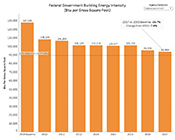
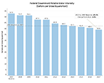
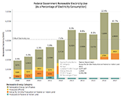
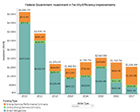
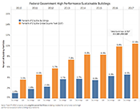
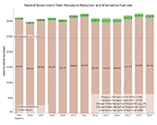
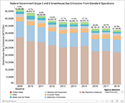

On This Page
- Annual Climate Adaptation Plans and Reports
- OMB Scorecards for Efficient Operations/Management
- Agency Performance Data
Annual Climate Adaptation Plans and Reports
As directed by President Biden's January 2021 Executive Order 14008, major Federal agencies were required to develop an adaptation and resilience plan to address their most significant climate risks and vulnerabilities. These Climate Adaptation and Resilience Plans were released in October 2021. As outlined in President Biden's December 2021 Executive Order 14057 and Federal Sustainability Plan, major Federal agencies were required to implement the actions identified in their October 2021 Climate Adaptation and Resilience Plans and provide annual updates on progress made. On October 6, 2022, major Federal agencies released their inaugural Climate Adaptation and Resilience Progress Reports.
Sustainability Report and Implementation Plans
Annual agency plans summarize actions implemented to meet sustainability goals, progress, results, cost savings, and the agency's strategies for continued progress and performance improvements.
Download the Department of Agriculture's 2020 Sustainability Report and Implementation Plan (PDF).
View previous years' Sustainability Report and Implementation Plans.
OMB Scorecard for Efficient Federal Operations/Management
By statute, the Director of the Office of Management and Budget (OMB) is required to publish agency progress and scorecards on Federal agency performance on energy efficiency and sustainability.
Agency Performance Data
The Department of Agriculture' historical performance toward energy and sustainability goals are featured in the following categories. Click the thumbnails below to jump to each interactive progress graph.
 Water Use
 Renewable Electricity
 Facility Efficiency Investments
 High Performance Sustainable Buildings
 Fleet Petroleum and Alternative Fuel
 Greenhouse Gas Emissions

Facility Energy Use

Source: Agency facility energy use is submitted to DOE-FEMP through Annual Energy and Water Use Reports. Details and background data can be found on FEMP's Comprehensive Annual Energy Data and Sustainability Performance data site.
Water Use

Source: Agency facility water use is submitted to DOE-FEMP through Annual Energy Data Reports. Details and background data can be found on FEMP's Comprehensive Annual Energy Data and Sustainability Performance data site.
Renewable Electricity

Source: Agency renewable electric energy consumption is submitted to DOE-FEMP through Annual Energy Data Reports. Details and background data can be found on FEMP's Comprehensive Annual Energy Data and Sustainability Performance data site.
Facility Efficiency Investments

Source: Agency facility efficiency investments are submitted to DOE-FEMP through Annual Energy Data Reports. Details and background data can be found on FEMP's Comprehensive Annual Energy Data and Sustainability Performance data site.
High Performance Sustainable Buildings

Source: Agency sustainable building inventory is reported through GSA's Federal Real Property Profile Management System. Details and background data can be found in the Federal Real Property Public Data Set (FRPP)
Fleet Petroleum and Alternative Fuel

Source: Agency fleet petroleum and alternative fuel use reported to DOE-FEMP. Details and background data can be found on the Federal Automotive Statistical Tool (FAST)
Greenhouse Gas Emissions

Source: Agency greenhouse gas emission are calculated from the agency submitted Annual Energy Data Reports. Details and background data can be found on FEMP's Comprehensive Annual Energy Data and Sustainability Performance data site.

Council on Environmental Quality730 Jackson Place N.W.
Washington, D.C. 20503